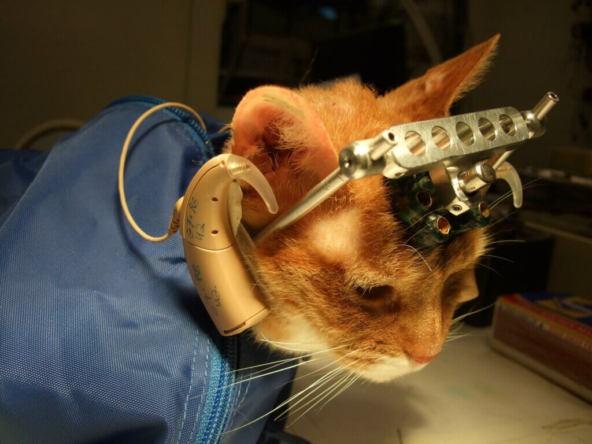
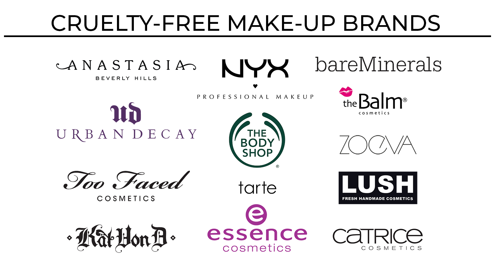

Here's what animal testing is really all about
by Katarzyna Laniecka
Have you ever wondered what really happens during animal testing? What is this on-going battle between scientists and animal rights fighters? I’m here to shed some light on this issue.
Beware! After reading this you may change your habits forever.
In the labs
Mice, rats, frogs, dogs, cats, rabbits, hamsters, guinea pigs, monkeys, fish, and birds – those are animals that suffer the most often. Over 100 million of them is killed each year in US laboratories.
A cat used for experimentation, holed drilled in its skull to attach the device
(Source: https://www.peta.org/issues/animals-used-for-experimentation/animal-testing-101/)
What exactly happens to those innocent living creatures? You may ask. In order to achieve their goals, testers force their subjects to inhale toxic fumes, drill holes into their skulls, burn their skin off and crush their spinal cords. Tested animals aren’t treated as thinking, feeling beings, but disposable laboratory equipment.
What you can do
1. Buy only from companies that refuse to use animal testing.
2. Let research-funding agencies around you know that you don’t support their animal experimentation habits. Write a letter!
3. Sign the global Cruelty-Free pledge to show your support.
4. Raise awareness through social media. You can trtweeting using the hashtag #BeCrueltyFree or like @HSIGlobal and other organizations on Facebook.
Does it really help?
The facts are frightening, but this is the price we have to pay to grow and learn about the human nature, right? Well, no. Studies have shown that a minor amount of animal experiments have contributed to improving human health.
The reason isn’t hard to find. The test subjects are induced with diseases artificially, which are never exactly the same as those occurring naturally. And because animals are so different from humans, the test results will never be perfectly accurate.
For instance, not many of us have heard that the cure to cancer has already been invented. Same with HIV/AIDS. But… not for humans. Our systems differ from monkeys’ in such a significant way that it’s not possible to treat both patients the same way.
That should really make you wonder if animal testing is beneficial after all.
About beauty industry
You know now why tests on animals aren’t necessary for curing diseases, but what about manufacturing cosmetics? I’m sure you have stumbled upon the term cruelty-free cosmetics. These are products that were made without sacrificing any animal’s life.
A list of make-up brands worth switching to
(Credit: Katarzyna Laniecka)
If some companies manage to survive without the cruel experiments, why do other ones still choose to do it? The thing is, many companies really rely on launching products made of brand new ingredients, ones that haven’t been used before and ones nobody knows the effects of. But the truth is there are alternatives to animal testing. About 40 cruelty-free methods have already been validated and proven to be much more relevant to the human body than the outdated animal experiments. They’re also much cheaper and faster. So hopefully it’s only a matter of time before all companies realize there’s no point in sacrificing so many lives.